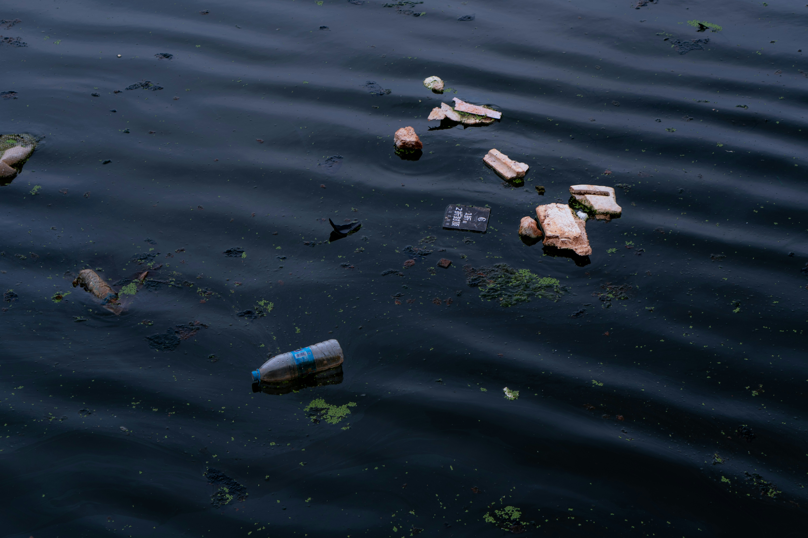
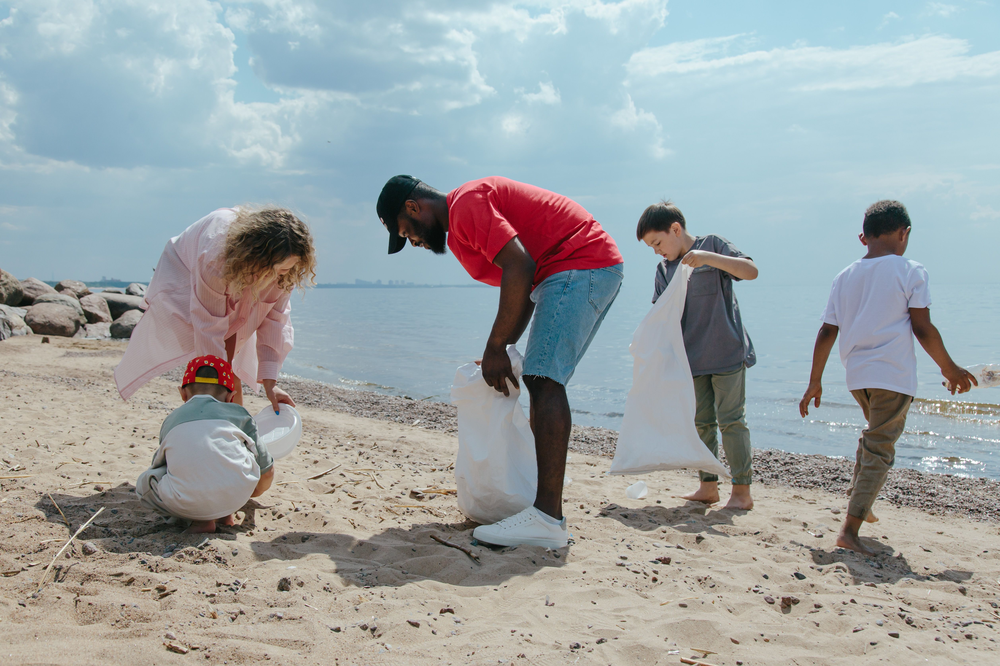

Why Protect Our Oceans?
Our oceans are home to extraordinary wildlife and ecosystems that support life on Earth. Explore the key topics below to discover the challenges they face and how we can protect them together.

Endangered Species
Discover remarkable marine animals, their conservation status, and why they need our protection.
Learn More
Marine Ecosystems
Explore the diverse ocean habitats that support marine life and keep our oceans healthy.
Learn More
Ocean Threats
Learn about the human activities and environmental challenges affecting our oceans today.
Learn More
Take Action
Find simple, meaningful ways you can help protect marine life and make a positive impact.
Learn More